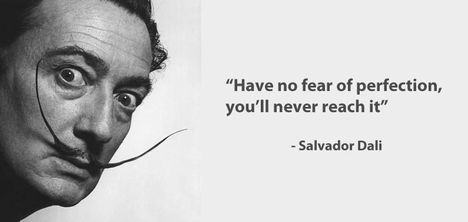

El sexo alivia la tensión y el amor la causa. Woody Allen
No te ahogas al caer a un río, sino al mantenerte sumergido en el. Paulo Coelho
No es pobre el que tiene poco, sino el que mucho desea. Séneca
Disculpen si les llamo caballeros, pero todavía no les conozco bien. Groucho Marx
La vida es maravillosa si no se le tiene miedo. Charles Chaplin
La vida es como montar en bicicleta; para mantener el equilibrio debes seguir moviéndote. Albert Einstein.
